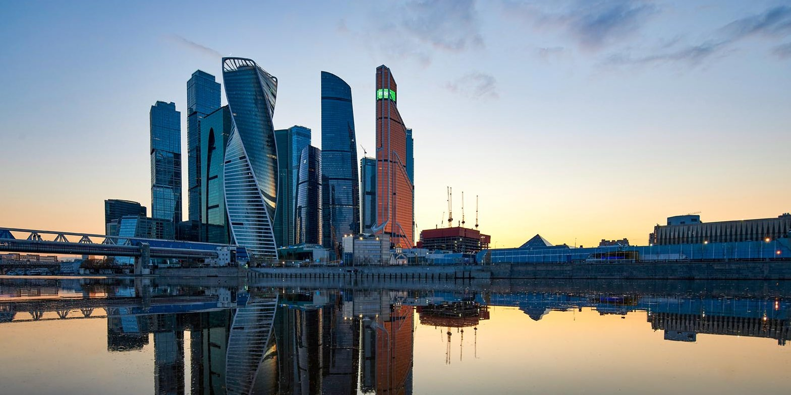
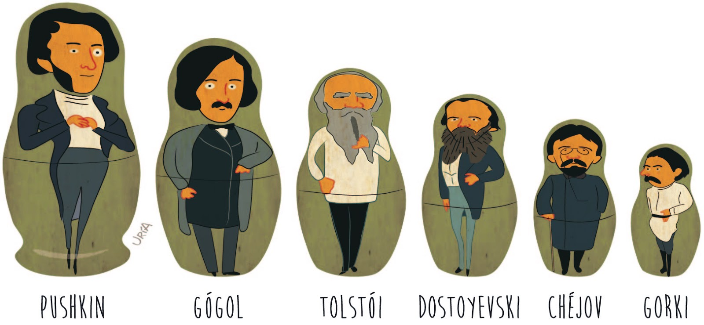

La crisis económica que afectó a todos los países postsoviéticos en los años 1990 fue peor que la Gran Depresión en los
países de Europa Occidental y los Estados Unidos en los años 1930. Incluso antes de la crisis financiera del año 1998 el
Producto Interno Bruto (PIB) de Rusia disminuyó hasta la mitad de los niveles de principios de la década de los 1990. Con
el comienzo del nuevo siglo, los crecientes precios del petróleo, mayores inversiones del exterior, mayor consumo interno y
mejor estabilidad política reforzaron el crecimiento económico de Rusia. A finales de 2007 el país disfrutaba del noveno año de
crecimiento continuo, con una media del 7 % desde la crisis financiera del 1998. En el 2007 el PIB de Rusia fue de dos billones
76 mil millones USD (est. PPA), el sexto más grande del mundo, con el crecimiento de 8,1 % desde el año anterior. El crecimiento
se debe principalmente a bienes y servicios no transables para el mercado interno, en comparación con la extracción de petróleo y
otros minerales y las exportaciones. El salario medio en Rusia fue de unos 640 $ al mes a principios de 2008, comparado con 80$ en 2000.
Aproximadamente el 14 % de los habitantes vivían por debajo de la línea de pobreza en 2007, muchos menos comparado con el 40 % del año 1998.
El desempleo en 2007 era del 6 %, mientras que en 1999 era del 12,4 %.
La sede de Gazprom en Moscú, el mayor extractor de gas natural en el mundo y una de las más grandes compañías mundiales.
Rusia posee las mayores reservas de gas natural del mundo, las segundas mayores reservas de carbón y las octavas mayores reservas de petróleo.
Es el primer exportador de gas natural y el segundo de petróleo, gas natural, metales y madera constituyen el 80 % de las exportaciones de Rusia.
| LITERATURA | ||||
|---|---|---|---|---|
La literatura rusa se considera una de las más influyentes y desarrolladas del mundo, contribuyendo con muchas de las más conocidas obras literarias. La historia literaria rusa data del siglo X, y de principios del siglo XIX emergió una tradición nativa, desarrollando a los más grandes escritores de todos los tiempos. Este periodo y la Edad de oro de la poesía rusa comenzó con Aleksandr Pushkin, considerado el fundador de la literatura rusa moderna y frecuentemente descrito como el Shakespeare ruso. |
Entre los más renombrados poetas y escritores rusos del siglo XIX están Yevgueni Baratynski, Mijaíl Lérmontov, León Tolstói, Nikolái Gógol, Iván Turguénev y Fiódor Dostoyevski. Iván Goncharov, Mijaíl Saltykov-Shchedrín, Antón Chéjov, Alekséi Písemski y Nikolái Leskov hicieron aportaciones duraderas a la prosa rusa. Tolstói y Dostoyevski en particular fueron unas figuras titánicas hasta el punto de que muchos críticos literarios caracterizaron a uno o al otro como el mejor novelista que jamás haya existido. En los años 1880 la literatura rusa empezó a cambiar. |
 | ||
| La era de los grandes novelistas había acabado y los relatos cortos y poesía empezaron a ser los géneros dominantes para las siguientes décadas conocidas como la Edad de plata de la poesía rusa. Dominada anteriormente por el realismo, la literatura rusa entre 1893 y 1914 estaba dominada por el simbolismo. Los escritores destacados de este período incluyen a Valeri Briúsov, Andréi Bely, Viacheslav Ivánov, Aleksandr Blok, Nikolái Gumiliov, Dmitri Merezhkovski, Fiódor Sologub, Anna Ajmátova, Ósip Mandelshtam, Marina Tsvetáyeva, Leonid Andréyev, Iván Bunin y Máximo Gorki. |
Después de la revolución rusa de 1917 y la guerra civil, la vida cultural estaba en caos. Algunos arraigados escritores salieron de Rusia, mientras que estaba emergiendo una nueva generación de escritores con talento quienes simpatizaban con la revolución. Los más entusiastas se unieron en organizaciones con el objetivo de crear una nueva y distintiva cultura proletaria para un nuevo estado. En los años 1920 los escritores disfrutaron de una amplia tolerancia. En los años 1930 la censura se endureció en línea con la política de Stalin del realismo socialista. |
|||